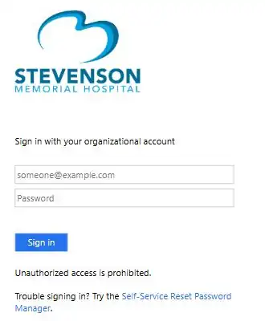
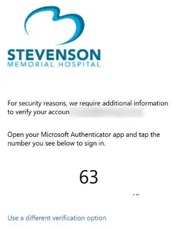
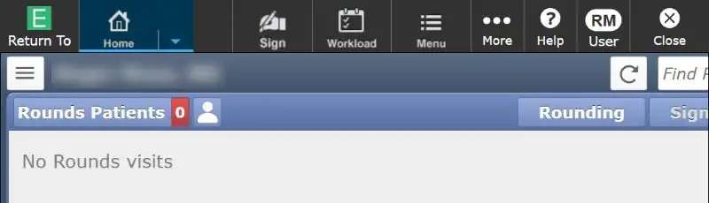

Medical staff onboarding
Welcome to MEDITECH Expanse at Stevenson Memorial
Everything a new physician needs to get comfortable in our electronic health record: short workflow videos, printable tip sheets and Dragon dictation setup. Follow the step-by-step onboarding path, or jump straight to the area you work in.
Your onboarding path
Expanse basics
The fundamentals of Expanse as an EMR: finding your way around the chart, writing notes, pulling labs, vitals and other data into your documentation, using the problem list and setting up templates.
Most of these videos were made by physicians at other hospitals that use MEDITECH Expanse, and each one says where it comes from. The core skills are the same, but some screens, templates and order sets will look slightly different at SMH. Our own note templates are the SMH Admission History, Clinical Consult, Progress Note and Discharge Summary pDocs.
Web Acute: inpatient care
Admitting, rounding, ordering, coverage and discharge on the wards. Start with the core workflows. They follow a patient from admission to discharge.
Web ED: emergency department
Seeing and discharging ED patients, admitting from the ED, and signing patients over at shift change.
Dragon Medical One
Speech recognition for your notes. Set up your microphone and vocabulary before your first shift so dictation is ready when you need it.
Dragon tip sheets
Working from home
Open Expanse remote sign-in ↗You can use Expanse from home in a web browser. You'll need Microsoft Authenticator on your phone, which takes about five minutes to set up once.
One-time setup: Microsoft Authenticator
- Install Microsoft Authenticator on your phone from the App Store or Google Play.
- On a computer, go to aka.ms/mfasetup and sign in with your Stevenson network/email ID and password.
- Choose Receive notifications for verification, then Set up.
- In the app, tap Add account → Work or school account and scan the QR code shown on your computer screen.
- Approve the test sign-in on your phone and click Done.
Signing in from home

1Sign inGo to smhehr.shinepartners.ca/mas and sign in with your SMH username and password.

2Match the numberA two-digit number appears. Open Authenticator on your phone and tap the same number. (Older instructions say "Approve"; you now match the number.)

3You're in ExpanseExpanse opens in your browser on your status board. When you're finished, click Close at the top right to sign out, especially on a shared computer.
General education
Tools that apply to every physician regardless of department, including bed management and patient-safety reporting.
What's new in Expanse 2.2
Full Care4 2.2 communication ↗SMH is moving from 2.1 to 2.2. Most workflows stay the same; these are the enhancements physicians will notice. Everything in this section is marked Expanse 2.2.
2.2 enhancements at a glance
- Web Acute patient lists
- Web Acute Provider Teams
- Sign up as an Other Provider
- Activity log: new filter functionality
- Web ED patient lists
- Web ED Call Back routine
- Document routine: “Copies To”
- Document routine access from PCS
- Orders management enhancements
- Flowsheets
- Widgets: restore template, collapse all
- Formatted data: active and on-hold meds
- New IV medication convenience set
- ED ONCE and PRN set
- Outpatient convenience prescription sets
- EMR preference settings
- Reports moving to the Diagnostics tab
2.2 tip sheets
2.2 feature videos
Tip sheet library
All Care4 provider resources ↗Step-by-step physician guides from Care4. They open on care-4.ca and can be printed. The version switch at the top filters this list too.